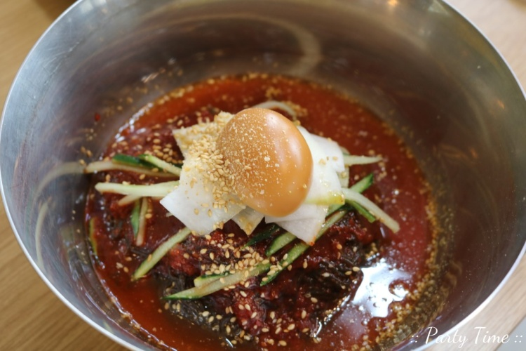

원조 태평동 곱창
Phone Number
031-756-6619
 Location
Location
Gyeonggi-do Seongnam-si Sujeong-gu Nammun-ro 17beon-gil 2
Time
PM 15:00 - AM 1:00
Closed on the 1st and 3rd Sunday of every month.
031-756-6619
LocationGyeonggi-do Seongnam-si Sujeong-gu Nammun-ro 17beon-gil 2
Time
PM 15:00 - AM 1:00
Closed on the 1st and 3rd Sunday of every month.
 Information
InformationLocated in Taepyeong-dong, Gyeonggi-do, this restaurant specializes in roasted giblets using only domestic giblets. Salt-grilled giblets and makchang, which are enjoyed lightly by eliminating odors with oriental medicinal herbs, are famous. The pickled chives are prepared immediately upon order, and the soup that is cooked that day is served. Cheese giblets that you can enjoy at an affordable price are also popular. Finish off with fried rice with the remaining seasoning.
 menu
menu- salt-grilled 0.8
- seasoned Roast 0.8
- stir-fried vegetables 0.8
- cheese giblets 0.9
태평 돈가스

Phone Number
0507-1416-8873
Location
Gyeonggi-do Seongnam-si Sujeong-gu Taepyeong-ro 8
Time
AM 11:00 - PM 21:00
Every Sunday is a regular holiday.
Information
It is not tonkatsu that is made in a factory and served frozen, but tonkatsu made by the owner himself.
menu
0507-1416-8873
LocationGyeonggi-do Seongnam-si Sujeong-gu Taepyeong-ro 8
Time
AM 11:00 - PM 21:00
Every Sunday is a regular holiday.
InformationIt is not tonkatsu that is made in a factory and served frozen, but tonkatsu made by the owner himself.
menu- raw sirloin pork cutlet 0.9
- spicy pork cutlet 0.95
- cheese pork cutlet 1.0
- water cold noodles 0.65
- Bibim Naengmyeon 0.65
- Tofu Udon 0.55
- Spicy Udon 0.55
- pork cutlet Udon 8.5
- spicy pork cutlet Udon 8.5
신사골 감자탕
Phone Number
0507-1481-2883
Location
Gyeonggi-do Seongnam-si Sujeong-gu Sujeong-ro 88
Time
00:00 - 24:00
There are no days off.
Information
All our restaurants are directly managed by our restaurant to provide quality food at a reasonable price. As always, we will be with our customers with a generous amount and consistent taste.
menu
0507-1481-2883
LocationGyeonggi-do Seongnam-si Sujeong-gu Sujeong-ro 88
Time
00:00 - 24:00
There are no days off.
InformationAll our restaurants are directly managed by our restaurant to provide quality food at a reasonable price. As always, we will be with our customers with a generous amount and consistent taste.
menu- Spicy Beef Bone Potato Soup 2.2
- Spicy king ribs 2.5
- Bone Haejangguk 0.7
- Hwangtae Haejangguk 0.6